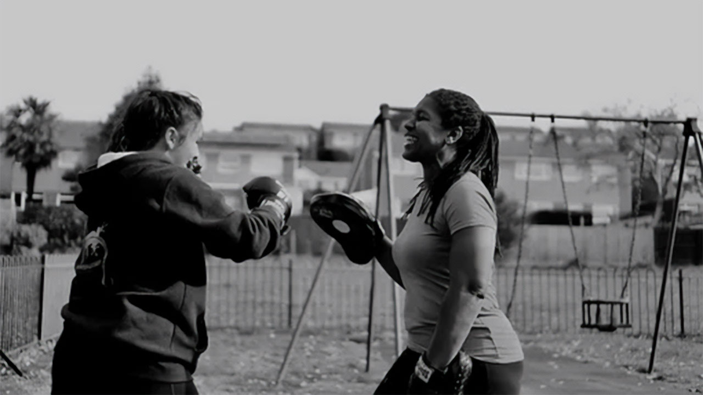

Patricia Howe
Personal Trainer,
Massage Therapist &
Crystal Therapist

About me
My passion is to help others achieve physical health and emotional wellness grows stronger as I evolve.
"Search within yourself"
Massage therapy is one of the oldest health care practices known to history (4,000 years). A therapy that provides both physical and emotional health benefits, in which I trained at School of Bodywork Exeter and gained my qualifications - most recently in advanced work as a Remedial Massage Therapist.
I feel massage beautifully compliments my personal training skills and my 34 years experience in the fitness industry.
In the personal training area of my career, I very much love the aspect of helping people set and achieve their goals, in a friendly and relaxed atmosphere. I particularly like working with people who don’t like the idea of the gym and supporting them to feel good about themselves. This can be in 1:1 personal training or in small semi-private groups.
Having owned a gymnasium in the centre of Exeter for 20 years, alongside being a level 3 personal trainer in addition to achieving the ladies British Bodybuilding Championship title twice, a wife, and a mother of two, I found it was time to start slowing down my exciting yet hectic journey and focusing in on the areas that I am most passionate about - helping people to feel good.
Crystal therapy has long been a hobby of mine which not only fascinates me, but drew me to the field of learning and experiencing more. How they are formed? What are their individual structures? Looking at the metaphysical aspect of crystals, and how they may have an effect on our bodies/lives. I eventually studied and gained an ICGT qualification.
Would you like to feel good but don’t know where to start and hate the idea of a gym? Let PHEW be your guiding hand.
Qualifications
- Level 3 Personal Trainer WABBA
(World Amateur BodyBuilding Association) - Complete Bodyworker and Remedial Massage Therapist APNT
(Association of Physical and Natural Therapists) - Crystal Therapist ICGT
(Institute of Crystal and Gem Therapists)
Services
Massage therapy
As a qualified complete body worker and remedial massage therapist, my practice offers an holistic approach, incorporating flexibility and mobilisation techniques within your tailor made treatment.
| Duration | Price* |
|---|---|
| 30 minutes | £35 |
| 45 minutes | £40 |
| 60 minutes | £45 |
| 90 minutes | £65 |
*NHS discount available upon proof of employment
Combination of personal training and massage therapy is a great stress relief package.
Personal training
Offering 1-1 sessions in the great outdoors, or creative sessions in a spacious room at Exeter Natural Health Centre for those of you who would prefer privacy during training sessions.
Your programmes are tailored to your ability and goals. Qualified Pre/Post natal wellness practitioner.
Reduced price for first session, packages available.
| Duration | Price |
|---|---|
| 1 hour | £40 |
| Example package 5 personal training sessions + 1 massage therapy session | £225 |
Crystal therapy
This is a very gentle non-intrusive holistic therapy, crystals have been of interest to me for a very long time which prompted me to research and eventually train as a crystal therapist.
Combination of massage therapy and crystal therapy can provide a beautiful sense of relaxation.
| Duration | Price |
|---|---|
| First session 45 minutes | £30 |
| Further treatments 30 minutes | £25 |
| Package - 45 minute massage treatment incorporating chakra balancing | £50 |
Contact
Patricia Howe
07930 258747
info@phew4u.co.uk
phewhealth
I aim to reply to your inquiry within 24 hours.
Exeter Natural Health Centre
Queens Walk 83/84
Queens Street
Exeter
EX4 3RP